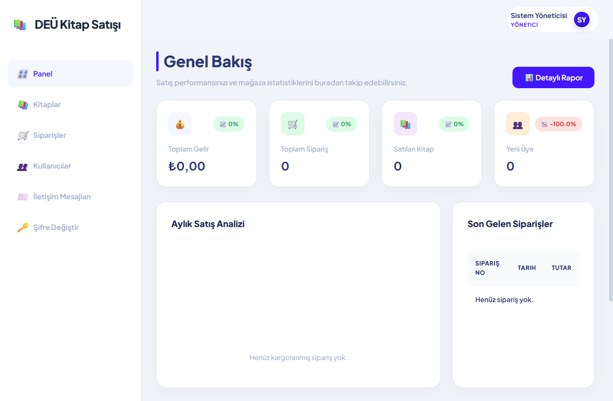
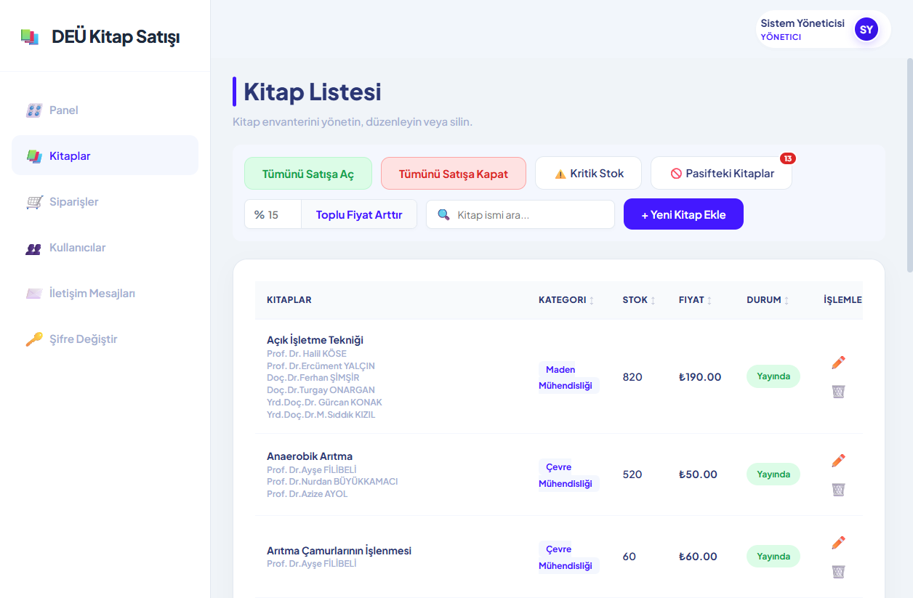
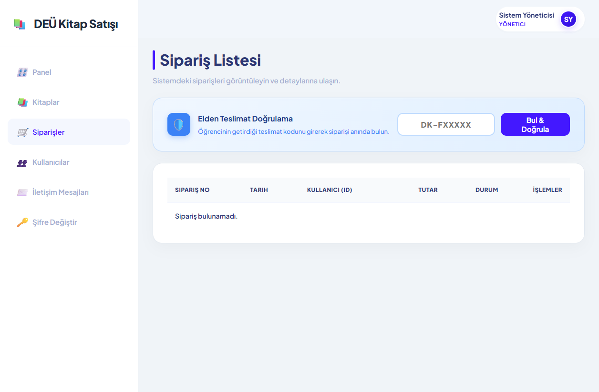
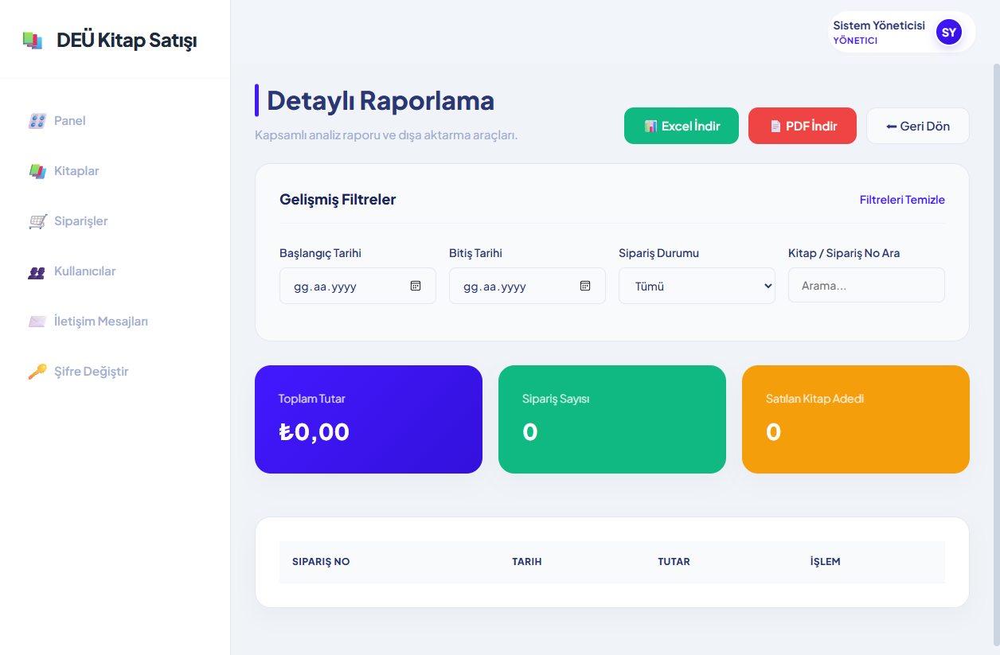

🔑 1. Giriş ve Erişim
Yönetici paneline güvenli şekilde nasıl giriş yapılacağı ve yetki aşamaları.
Sistem yöneticileri, genel kullanıcı arayüzü üzerinden giriş yaptıktan sonra otomatik olarak algılanır. Yönetici yetkilerine sahip hesaplar, platform üzerinde normal kullanıcıların erişemediği yönetim paneli arayüzüne yönlendirilirler.
Role = 'Admin' olarak işaretlenmiş olması gerekmektedir. Eğer giriş yaptıktan sonra yönetim butonunu göremiyorsanız sistem yöneticisiyle irtibat kurun.
- Ana sayfanın sağ üstündeki Giriş Yap butonuna tıklayın.
- Açılan ekranda yönetici e-posta adresinizi ve şifrenizi girin.
- Giriş yaptıktan sonra, sağ üstteki profil menüsünde beliren Yönetim Paneli butonuna tıklayın.
- Sistem sizi sol menüye sahip geniş yönetim paneline yönlendirecektir.
🎛️ 2. Genel Bakış (Dashboard) Paneli
Mağazanın ciro, sipariş ve üyelik performansını tek bir ekranda izleyin.

Dashboard ekranı, yöneticinin sistemi ilk açtığında gördüğü alandır. Burada en temel 4 gösterge kartı bulunur:
| Gösterge | Açıklama | İşlevi |
|---|---|---|
| 💰 Toplam Gelir | Kargolanmış (3), Teslim Edilmiş (4) ve Elden Teslim Edilmiş (6) siparişlerin toplam tutarıdır. | İptaller hariç net cironuzu takip etmenizi sağlar. |
| 🛒 Toplam Sipariş | Sistemdeki tüm siparişlerin adeti. İptal ve iadeler kart altında kırmızı parantez içinde belirtilir. | Sipariş hacmini gösterir. |
| 📚 Satılan Kitap | Gönderimi başarıyla yapılmış toplam fiziksel kitap adetidir. | Stok devir hızınızı değerlendirmede kullanılır. |
| 👥 Yeni Üye | Sadece içinde bulunulan ay kaydolan yeni üye sayısıdır. | Platformun büyüme ivmesini temsil eder. |
Aylık Satış Analizi Grafiği: Geçmiş aylardaki başarılı teslimat gelirlerini bar grafik olarak karşılaştırır. Barların üzerine fare ile gelinerek detaylı tutar görülebilir.
Kategori Dağılımı ve Çok Satanlar: Sayfanın altında, en çok satılan kitapların isimleri ve mühendislik bölümlerine/kategorilerine göre kazanılan ciro barları anlık listelenir.
📘 3. Kitap Yönetimi (Envanter)
Kitap ekleme, stok güncelleme, toplu fiyat değişiklikleri ve envanter filtreleri.

Kitap yönetimi sayfasında, stoğunuzda bulunan ders kitaplarını, dış yayınları yönetebilir, toplu fiyat artışı yapabilir veya kritik seviyedeki kitapları denetleyebilirsiniz.
- Kitap Listesi ekranında sağ üstteki yeşil + Yeni Kitap Ekle butonuna tıklayın.
- Temel Bilgiler: Kitabın adını girin. Yazarları virgülle ayırarak yazın (örn: Ahmet Yılmaz, Mehmet Can). Detaylı açıklama girin.
- Detaylar: Kategori (örn: Makina Mühendisliği) seçin. ISBN numarasını rakamlarla yazın (ISBN kutusu tire işaretlerini otomatik ekler). Sayfa sayısını ve basım yılını girin.
- Kapak Görseli: "Kapak Seç" alanına tıklayıp bilgisayarınızdan resmi seçin. Yüklendiğinde resim önizlemede görünür.
- Fiyat & Stok: Satış fiyatını ₺ cinsinden yazın. Stok adedini girin. Min Stok sınırını belirleyin (Stok bu değerin altına düşerse kritik olarak işaretlenir).
- Görünürlük: "Satışa Açık" switch butonunun açık (yeşil) olduğundan emin olun.
- Sağ üstteki 💾 Değişiklikleri Kaydet butonuna basarak ürünü yayına alın.
Ekranın üst kısmında toplu eylemleri gerçekleştireceğiniz kısayol butonları mevcuttur:
- Tümünü Satışa Aç / Kapat: Sitedeki bütün kitapları tek hamlede aktif/pasif hale getirmek için tıklanır ve onay kutusu doğrulanır.
- Toplu Fiyat Arttır: Yüzdelik girdi alanına sayı yazıp (örn:
10) butona tıklandığında, depodaki tüm kitapların fiyatı otomatik olarak %10 oranında yükseltilir.
Zamanla yüzlerce kitap arasında stok takibi zorlaşabilir. Bu durumda envanter listesindeki iki adet filtre butonu kullanılır:
- ⚠️ Kritik Stok Filtresi: Tıklandığında yalnızca stok miktarı
Min Stokdeğerinden daha az kalmış kitaplar listelenir. Bu sayede tükenmek üzere olan kitapları hemen sipariş edebilirsiniz. - 🚫 Pasifteki Kitaplar Filtresi: Yalnızca
Satışa Açıkdurumu kapalı olan (gizlenmiş) kitapları görmenizi sağlar.
🛒 4. Sipariş Yönetimi
Sipariş takipleri, teslimat durumu güncellemeleri ve elden teslim doğrulama kodu sistemi.

Siparişler sayfasında müşterilerin sipariş kodlarını doğrulayabilir, sipariş içeriklerini görüntüleyebilir ve kargo veya elden teslim durumlarını güncelleyebilirsiniz.
Öğrenciler dekanlık veya kitap teslim noktasından siparişlerini teslim almak üzere geldiklerinde aşağıdaki adımlar uygulanır:
- Alıcının telefonundaki veya çıktısındaki DK-FXXXXX biçimli kodu alın.
- Sipariş sekmesindeki üst tarafta bulunan mavi renkli Elden Teslimat Doğrulama kutusuna kodu yazın.
- Bul & Doğrula butonuna tıklayın.
- Sipariş anında bulunup detay ekranı açılır ve yeşil renkli ✅ KOD DOĞRULANDI rozeti görünür.
- Sipariş içeriğinde belirtilen kitapları alıcıya elden teslim edin.
- Sipariş durumunu "Elden Teslim Edildi" olarak güncelleyip kaydedin.
Her siparişin belirli bir hayat döngüsü vardır. Bunlar durum kodlarıyla belirlenir:
- Hazırlanıyor (2): Kitapların raftan indirilip koliye/pakete konma aşamasında olduğunu belirtir.
- Kargoya Verildi (3): Paketin kargo firmasına teslim edildiğini ifade eder.
- Elden Teslim Edildi (6): Alıcının kodu doğrulanarak elden teslim aldığı durumdur.
- İptal Edildi (5): Ödeme yapılmayan ya da alıcı tarafından ilk 10 dakikada iptal edilen siparişler.
- İade Edildi (7): Teslimat sonrası 14 gün içinde geri iade edilen siparişlerdir.
👥 5. Kullanıcı Yönetimi
Sisteme kayıtlı kullanıcı hesaplarının yetki kontrolleri, silme işlemleri ve sipariş geçmişi takibi.
Bu ekran, kayıtlı tüm üyelerin (öğrenci, akademisyen veya diğer yöneticiler) detaylarına erişmenizi sağlar. Arama kutusunu kullanarak kullanıcı adına veya e-posta adresine göre filtreleme yapabilir, kayıt tarihine veya isme göre sıralayabilirsiniz.
- Kullanıcılar tablosunda incelemek istediğiniz kullanıcının satırında yer alan 👁️ (İncele) simgesine tıklayın.
- Ekranın solunda kullanıcının profil baş harflerinden oluşan daire logo, ad soyad, e-posta, telefon ve sisteme kayıt tarihi bilgisi açılır.
- Ekranın sağında ise bu kullanıcının bugüne kadar verdiği tüm siparişler, sipariş tarihleri, tutarları ve sipariş durumları liste halinde sunulur.
- Üstteki sol ok butonuna basarak genel listeye geri dönebilirsiniz.
Kötü niyetli veya sistem kurallarına aykırı hareket eden hesaplar için silme işlemi uygulanabilir:
- Kullanıcı satırındaki kırmızı 🗑️ (Sil) butonuna tıklayın.
- Çıkan onay penceresindeki uyarıları okuyarak onay verin.
✉️ 6. İletişim Mesajları
Siteden gönderilen destek taleplerini, soruları ve mailleri yanıtlayın.
Ziyaretçilerin "İletişim" formundan gönderdiği sorular sol menüdeki İletişim Mesajları sekmesine bildirim olarak yansır. Okunmamış mesajların yanında kırmızı renkli adet rozeti bulunur.
- Gelen kutusunda okunmamış (arka planı renkli ve mavi bildirim noktalı olan) mesajları tespit edin.
- Mesaj satırının sağındaki Oku & Yanıtla butonuna tıklayın.
- Açılan pencerede kullanıcının ismi, kayıt tarihi, mesajın konusu ve detaylı içeriği gösterilir.
- Cevabınızı alt kısımdaki Yanıtınız kutusuna yazın.
- Cevabı Gönder butonuna tıklayın. Yazdığınız yanıt kaydedilir, arka planda kullanıcıya e-posta olarak iletilir ve mesajın durumu yeşil renkli "Yanıtlandı" olarak değişir.
🛡️ 7. Güvenlik ve Şifre Değiştirme (2FA)
Yönetici hesaplarının güvenliğini sağlamak için iki adımlı şifre güncelleme adımları.
Yönetici hesabı platformun tüm verilerine erişim hakkına sahip olduğundan, şifre değişimlerinde iki faktörlü kimlik doğrulama zorunludur. E-posta onay kodu girilmeden yeni şifre aktif edilemez.
- Sol menüden Şifre Değiştir sekmesine girin.
- Mevcut Şifrenizi girin.
- Yeni Şifrenizi yazın ve alttaki kutuya aynısını tekrar girerek şifreleri eşleştirin.
- Şifreyi Güncelle butonuna basın.
- Sistem, kayıtlı e-posta adresinize 6 haneli geçici bir güvenlik kodu yollar.
- E-postanızı açıp gelen 6 haneli kodu kopyalayın ve ekrandaki Doğrulama Kodu alanına yapıştırın.
- Doğrula ve Şifreyi Değiştir butonuna basarak işlemi tamamlayın.
📊 8. Detaylı Raporlama ve Dışa Aktarma
Finansal raporları tarih aralıklarına göre filtreleyin ve kurumsal formatlarda dışa aktarın.

Raporlama modülü, tarih aralığı, sipariş durumu veya kitap adlarına göre gelişmiş sorgulamalar yapabilmenizi sağlar. Filtrelenen siparişlerin toplam geliri, sipariş sayısı ve satılan kitap adeti anında üst kartlarda gösterilir.
Raporlama sayfasının sağ üstünde yer alan yeşil 📊 Excel İndir butonuna bastığınızda, sistem verileri işleyip şu kurumsal standartlara göre düzenlenmiş bir dosya indirir:
- Görsel Düzen: Sütun genişlikleri içeriğe göre otomatik açılır, yazılar taşmaz. Başlık satırı kalın (Bold), büyük punto ve sarı dolgu ile biçimlendirilmiştir.
- Bölmeler: Hücre kenarları ince gri çizgilerle çevrilidir. Fiyat sütunları otomatik para birimi formatına (
₺150.00) dönüştürülmüştür. - Çoklu Sayfalar: Excel dosyasında iki ayrı çalışma sayfası bulunur. Birincisi detaylı sipariş listesi, ikincisi ise kategorilere göre toplam satış adetlerini toplayan Kategori İstatistikleri özet tablosudur.
Filtrelenmiş sipariş listesini PDF olarak almak için kırmızı 📄 PDF İndir butonuna basın. İndirilen dosyanın özellikleri:
- Sayfa Yapısı: Yatay (Landscape) A4 kağıt boyutuna uygun tasarlanmıştır.
- Marka Tasarımı: Sayfa başında platformun kurumsal mavi şeridi (`#4318ff`) ve başlık yer alır. Tablolar çizgili satır (zebra) modeliyle kolay okunur biçimdedir.
- Dil Desteği: PDF standart fontlarının Türkçe harfleri bozmasını engellemek amacıyla otomatik karakter dönüşümü uygulanarak kusursuz bir metin çıktısı elde edilir.
- Alt Bilgiler: Her sayfanın altında otomatik sayfa numaraları (örn: Sayfa 1 / 3) bulunur.